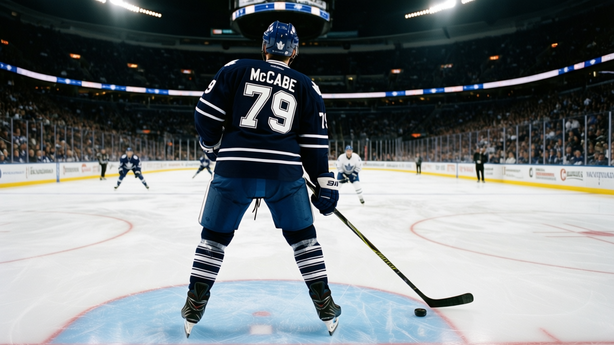

TOR
TORDANFORTH: McCabe and Sundin both have 45 points, and only one of them gets a paragraph
The blue line is deep, cheap, and back to full strength. The road trip starts Sunday and this is the unit I trust.
 Frankie DanforthColumnist · Queen City Telegram
Frankie DanforthColumnist · Queen City Telegram
Code Green

 Bryan McCabe83 has 45 points.
Bryan McCabe83 has 45 points.  Mats Sundin88 has 45 points. One is the captain, the highest-paid player on this roster, and the man whose name fills every highlight package that airs in this city. The other is 29 years old, plays 23.0 minutes a night, makes $3.00M, has 4 more years on his contract, and I do not think anyone outside this building could tell you his points total without looking it up.
Mats Sundin88 has 45 points. One is the captain, the highest-paid player on this roster, and the man whose name fills every highlight package that airs in this city. The other is 29 years old, plays 23.0 minutes a night, makes $3.00M, has 4 more years on his contract, and I do not think anyone outside this building could tell you his points total without looking it up.
McCabe has 33 assists. More than  Alexander Mogilny87 and her 30. More than
Alexander Mogilny87 and her 30. More than  Gary Roberts87 and his 27. More than Sundin and his 24. McCabe is the team's leading assist man and its leading scorer, a defenseman, playing the first power play unit and the minutes that nobody volunteers for.
Gary Roberts87 and his 27. More than Sundin and his 24. McCabe is the team's leading assist man and its leading scorer, a defenseman, playing the first power play unit and the minutes that nobody volunteers for.
The blue line is the unit where I can name every pairing and sleep.  Robert Svehla84 is back after sitting the last edition. He has 15 points in 19 games, plays 23.7 minutes, and makes $3.60M with 1 year left.
Robert Svehla84 is back after sitting the last edition. He has 15 points in 19 games, plays 23.7 minutes, and makes $3.60M with 1 year left.  Sami Salo82 is back at L3RD.
Sami Salo82 is back at L3RD.  Jiri Fischer84 has 14 points in 30 games. The pairings have a shape that holds.
Jiri Fischer84 has 14 points in 30 games. The pairings have a shape that holds.
 Rostislav Klesla83 is 22, has 20 points, plays 14.6 minutes, and makes $0.90M with 2 years left. The Bureau's Development Index has him up 5. I have watched 31 Decembers of this team and Klesla is the first 22-year-old defenseman I have not wanted to ship by February. I do not hand that out.
Rostislav Klesla83 is 22, has 20 points, plays 14.6 minutes, and makes $0.90M with 2 years left. The Bureau's Development Index has him up 5. I have watched 31 Decembers of this team and Klesla is the first 22-year-old defenseman I have not wanted to ship by February. I do not hand that out.
Now the road. Sunday to  Calgary Flames, 10-20-3. Tuesday to
Calgary Flames, 10-20-3. Tuesday to  Edmonton Oilers, 13-12-1. Thursday to
Edmonton Oilers, 13-12-1. Thursday to  Vancouver Canucks, 18-10-4. Then
Vancouver Canucks, 18-10-4. Then  New Jersey Devils on 2005-01-03 and 2005-01-04. New Jersey has allowed 94 goals in 31 games. That is the wall. Everything before New Jersey is warm-up.
New Jersey Devils on 2005-01-03 and 2005-01-04. New Jersey has allowed 94 goals in 31 games. That is the wall. Everything before New Jersey is warm-up.
The fourth line is still a tax. Petr Chlup83 is 18 and playing 12.1 minutes. Vaclav Spacek76 is out until tomorrow. I will keep asking for a second centre because asking is what I am paid to do.
Mogilny told The Tunnel's Marcus Bell after the St. Louis game: "I see my team. We play sixty minutes. Every night, sixty minutes, that is the thing. The rest, June, we see in June."
I will look at the standings in June, too. After I finish counting minutes on the fourth line tonight.
McCabe, 33 assists, 45 points, 23.0 minutes, $3.00M, 4 years. Sundin, 24 assists, 45 points, 17.6 minutes, $8.40M, 5 years. They both have 45 points. Read the two lines again and tell me which contract I should be grateful for.